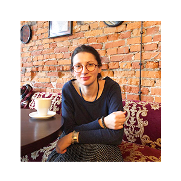
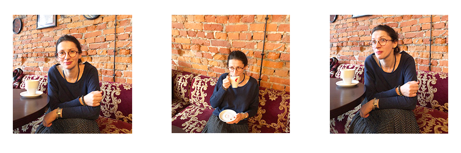
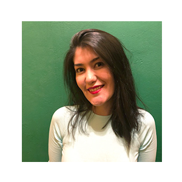
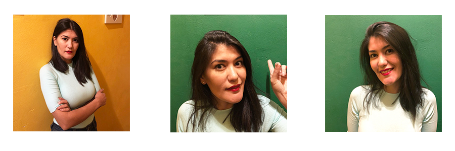

O Nas
Sylwia AAA
 Jestem reżyserką widowisk teatralnych, pedagogiem, prowadzę warsztaty teatralne oparte na improwizacji. Twórcze i kreatywne myślenie jest sednem mojej pracy. Prowadzę warsztaty niekonwencjonalnie i odważnie. Przekazuję uczestnikom konkretne narzędzia , które mogą wykorzystać do dalszej pracy. Podczas 20 lat pracy warsztatowej udało mi się wypracować umiejętność dostosowywania ćwiczeń do potrzeb grupy co oznacza, że nigdy nie ma dwóch takich samych warsztatów.
Treningi kreatywności prowadziłam m.in dla wychowawców pracujących w Centrum Wspierania Rodzin, nauczycieli, młodzieży oraz seniorów.
Ukończyłam pedagogikę na Uniwersytecie Warszawskim, Szkołę Aktorską Haliny i Jana Machulskich, oraz wydział sztuki tworzenia widowisk teatralnych na Uniwersytecie Londyńskim (The Royal Central School of Speech and Drama). Treningi kreatywności łączę z realizacją działań artystycznych.
Laziza BBB
 Nie jestem trenerem, szkoleniowcem, psychologiem ani też coachem. Jestem twórcą i pedagogiem. Piszę scenariusze do spektakli i filmów animowanych, reżyseruje i oczywiście prowadzę warsztaty.
Pomysły do spektakli oraz spektakle rozwijam W swoich działaniach twórczych posługuje się techniką improwizacji teatralnej oraz ruchowej, które podpieram technikami myślenia kreatywnego, innowacyjnego oraz wszelkimi ćwiczeniami rozwijającymi twórcze myślenie.
Z kolei wiele technik kreatywnego myślenia wykorzystuje w pracy nad scenariuszami, które piszę oraz przy wymyślaniu widowisk teatralnych.
Prowadzę warsztaty niekonwencjonalnie i odważnie. Przekazuję uczestnikom konkretne narzędzia , które mogą wykorzystać do dalszej pracy. Dostosowuję zadania i ćwiczenia „na gorąco” do aktualnych emocji i potrzeb grupy.
Ukończyłam pedagogikę na Uniwersytecie Warszawskim, Szkołę Aktorską Haliny i Jana Machulskich, oraz wydział sztuki tworzenia widowisk na Uniwersytecie Londyńskim w Colleagu The Royal Central School of Speech and Drama.